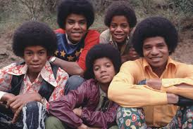
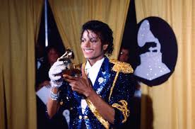
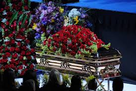

O REI DO POP:

O início:
Nascido em 1958, Michael Jackson iniciou sua carreira no Jackson 5 com 5 anos de idade, junto de seus irmãos. O grupo fez grandes avanços tendo Michael como principal vocalista, trazendo hits como "ABC" e "I Want You Back" que alcançaram sucessos mundiais.

A carreira solo:
Apesar de já ter lançado álbuns solos anteriormente, como Thriller, Michael Jackson oficializou sua carreira solo em 1984, finalizando sua carreira no Jackson 5.

O sucesso:
Em 1982, antes mesmo de sair do Jackson 5, Michael Jackson se tornou um ícone global com o lançamento do álbum Thriller. O álbum Thriller se tornou o álbum mais vendido da história. Em 83, Michael Jackson apresenta pela primeira vez o Moonwalk nas telas, tornando-se um fenômeno nas TV's e tendo influência até hoje.

O fim:
Michael Jackson falece em junho de 2009, aos 50 anos, onde foi vítima de uma parada cardíaca, que foi causada por intoxicação aguda de propofol e benzodiazepínicos. A morte de Michael foi dada como homicídio por seu médico, Conrad Murray, que administrou os medicamentos inadequadamente.
